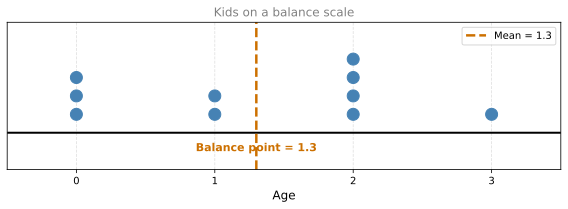
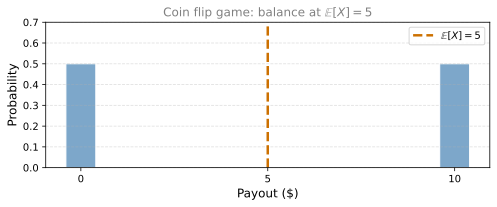
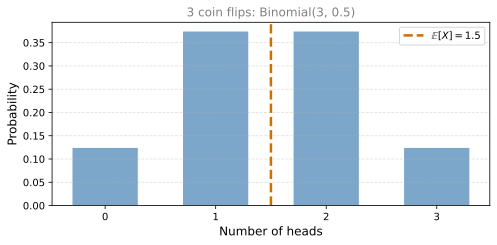
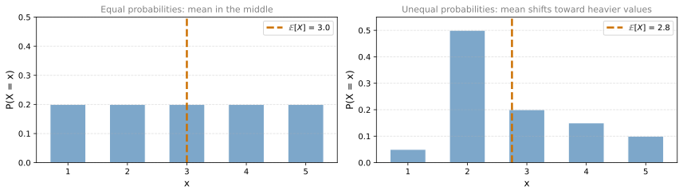
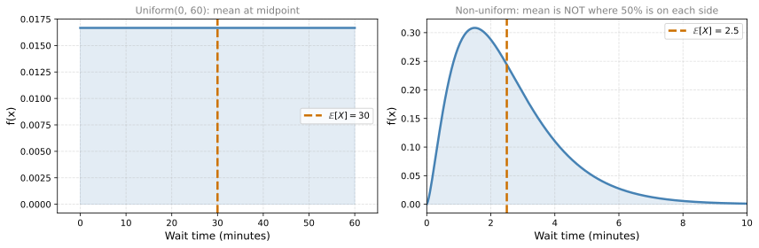
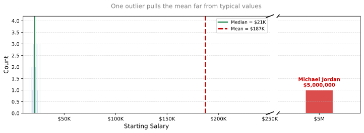
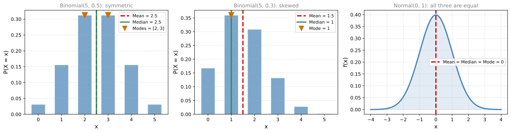
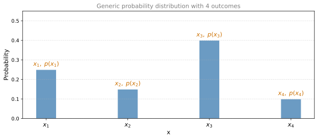
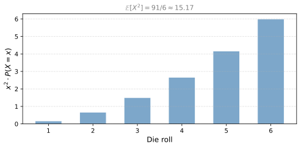
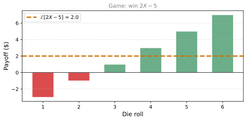

Expected Value, Median, and Mode
probability
So far you have learned about probability distributions. Now you will learn ways to describe those distributions with single numbers. The most…
So far you have learned about probability distributions. Now you will learn ways to describe those distributions with single numbers. The most fundamental descriptor is the mean, also called the expected value. It tells you where the center of a distribution is.
Intuitive Meaning: Balancing Point
Consider a sample of 10 kids with the following ages:
- 3 kids of age 0
- 2 kids of age 1
- 4 kids of age 2
- 1 kid of age 3
What is the mean of this distribution? Think of it physically: replace each kid with a ball on a number line and find the point where the scale balances.
The scale balances at 1.3. This is the mean.
Computing the Mean
You probably know the formula: sum all values and divide by the count.
\[ \text{Mean} = \frac{3 \times 0 + 2 \times 1 + 4 \times 2 + 1 \times 3}{10} = \frac{13}{10} = 1.3 \]
Now rewrite this by distributing the denominator into each term:
\[ \text{Mean} = \frac{3}{10} \times 0 + \frac{2}{10} \times 1 + \frac{4}{10} \times 2 + \frac{1}{10} \times 3 \]
These fractions are exactly the probabilities of each age. The mean is a weighted average of the values, where the weights are probabilities.
Expected Value Notation
In probability, the mean is called the expected value and written as \(\mathbb{E}[X]\) (read “E of X”). For a discrete random variable \(X\) with possible values \(x_1, x_2, \ldots, x_n\):
\[ \mathbb{E}[X] = \sum_{i} x_i \cdot P(X = x_i) \]
This is simply the weighted average formula: each value multiplied by its probability, summed over all possible values.
Example: Coin Flip Game
Imagine a game: you flip a fair coin. Heads pays $10, tails pays $0. What is the maximum you would pay to play?
\[ \mathbb{E}[X] = 0.5 \times 10 + 0.5 \times 0 = 5 \]
The expected payoff is $5. This is the fair price for the game. You should not pay more than $5 because on average you would lose money.

Example: Flipping 3 Coins
You flip 3 coins and win $1 for each heads. The possible outcomes (number of heads) follow the binomial distribution you already know:
\[ \mathbb{E}[X] = \frac{1}{8} \times 0 + \frac{3}{8} \times 1 + \frac{3}{8} \times 2 + \frac{1}{8} \times 3 = 1.5 \]
You can also reason: half of 3 coins should be heads, so \(\mathbb{E}[X] = 3 \times 0.5 = 1.5\).

Effect of Unequal Probabilities
If every value has the same probability, the expected value is right in the middle. But if one value has more weight (higher probability), the balance point shifts toward it.
<>:12: SyntaxWarning: invalid escape sequence '\m'
<>:24: SyntaxWarning: invalid escape sequence '\m'
<>:12: SyntaxWarning: invalid escape sequence '\m'
<>:24: SyntaxWarning: invalid escape sequence '\m'
/tmp/ipykernel_1547815/3764296856.py:12: SyntaxWarning: invalid escape sequence '\m'
axes[0].axvline(mean_uniform, color='#CC7000', linewidth=2.5, linestyle='--', label=f'$\mathbb{{E}}[X]$ = {mean_uniform:.1f}')
/tmp/ipykernel_1547815/3764296856.py:24: SyntaxWarning: invalid escape sequence '\m'
axes[1].axvline(mean_weighted, color='#CC7000', linewidth=2.5, linestyle='--', label=f'$\mathbb{{E}}[X]$ = {mean_weighted:.1f}')
Expected Value for Continuous Distributions
For continuous random variables, the idea is the same: the expected value is the balancing point of the PDF curve.
Uniform distribution between \(a\) and \(b\): the balance point is the midpoint.
\[ \mathbb{E}[X] = \frac{a + b}{2} \]
For a uniform distribution between 0 and 60 (like waiting for a bus that comes every hour), the expected wait time is 30 minutes.
Non-uniform distributions: the balance point is still the weighted average, but now using the PDF instead of the PMF. If you know integrals:
\[ \mathbb{E}[X] = \int_{-\infty}^{\infty} x \cdot f(x) \, dx \]
Even without calculus, you can think of it visually: find the point where the left and right sides of the curve balance.
<>:27: SyntaxWarning: invalid escape sequence '\m'
<>:27: SyntaxWarning: invalid escape sequence '\m'
/tmp/ipykernel_1547815/556273827.py:27: SyntaxWarning: invalid escape sequence '\m'
axes[1].axvline(mean_cont, color='#CC7000', linewidth=2.5, linestyle='--', label=f'$\mathbb{{E}}[X]$ = {mean_cont:.1f}')
Mean vs. Median
A common misconception: the mean is NOT necessarily the point that splits the data in half. The point where 50% of the data is on each side is called the median (you will learn more about it next).
The mean is the balance point. Think of it like a seesaw: even though an elephant (large mass) is close to the balance point, a mouse far away can still balance it because distance matters too.
Summary
| Concept | Description |
|---|---|
| Expected value \(\mathbb{E}[X]\) | Weighted average of all values, weighted by their probabilities |
| Visual meaning | The balancing point of the distribution |
| Discrete formula | \(\mathbb{E}[X] = \sum_i x_i \cdot P(X = x_i)\) |
| Continuous formula | \(\mathbb{E}[X] = \int x \cdot f(x) \, dx\) (weighted average using PDF) |
| Uniform distribution | \(\mathbb{E}[X] = \frac{a+b}{2}\) (midpoint) |
Review Questions
1. What is the expected value of a fair six-sided die?
TipAnswer
\(\mathbb{E}[X] = \frac{1}{6}(1 + 2 + 3 + 4 + 5 + 6) = \frac{21}{6} = 3.5\). Each value has equal probability \(\frac{1}{6}\), so the mean is the midpoint of the values.
1. You play a game: roll a die and win that many dollars. What is the fair price to pay for this game?
TipAnswer
The fair price is the expected payoff: \(\mathbb{E}[X] = 3.5\) dollars. If you pay more than $3.50 per game, you lose money on average.
1. A random variable \(X\) takes value 2 with probability 0.7 and value 8 with probability 0.3. What is \(\mathbb{E}[X]\)?
TipAnswer
\(\mathbb{E}[X] = 2 \times 0.7 + 8 \times 0.3 = 1.4 + 2.4 = 3.8\). The mean is closer to 2 because that value has more weight.
1. Is the expected value always a value that the random variable can actually take?
TipAnswer
No. In the 3-coin-flip example, \(\mathbb{E}[X] = 1.5\) heads, but you cannot actually flip 1.5 heads. The expected value is a theoretical average, not necessarily an achievable outcome.
1. For a uniform distribution between 10 and 50, what is the expected value?
TipAnswer
\(\mathbb{E}[X] = \frac{10 + 50}{2} = 30\). The uniform distribution is symmetric, so the mean is exactly at the midpoint.
When the Mean is Misleading
The mean is not the only way to measure the center of a distribution. There are other measures of central tendency: the median and the mode.
In the 1980s, the average starting salary for a geography graduate at the University of North Carolina was $250,000. The national average for geography graduates was $22,000. Was UNC that much better?
No. Michael Jordan graduated from UNC’s geography program and went on to earn enormous amounts of money. His salary was so extreme that it pulled the average up for everyone, even though no other graduate earned anywhere close to that amount.

The mean gets skewed by that one extreme point on the right. It no longer represents what a typical graduate earns.
Median: Middle Value
The median fixes this problem. Instead of computing a weighted average, you sort all values and pick the one in the middle. Half of the data falls to the left of the median and half falls to the right.
- If there is an odd number of values, the median is the middle one.
- If there is an even number, the median is the average of the two middle values.
The key insight: the median only cares about position, not magnitude. Michael Jordan contributes just one person to the sorted list, not millions of dollars. His extreme salary does not pull the median far from the bulk of the data.
NoteWhen to Use Median Over Mean
When data has extreme outliers or is heavily skewed (like income, house prices, or any variable where a few values are much larger than the rest), the median is a better representation of what is “typical.”
Mode: Most Frequent Value
The mode is the value with the highest probability (or frequency). It is the peak of the distribution.
- For a discrete distribution: the value where the PMF is highest (tallest bar).
- For a continuous distribution: the value where the PDF reaches its maximum (peak of the curve).
The mode is not always unique. A distribution can be multimodal (multiple peaks). For a uniform distribution, every value is equally likely, so there is no single mode.
Comparing Mean, Median, and Mode

Key observations:
- Symmetric distributions (left plot with \(p = 0.5\), or the normal): mean, median, and mode are all at the same point.
- Skewed distributions (middle plot with \(p = 0.3\)): the three measures separate. The mean gets pulled toward the tail, the median stays in the middle position, and the mode sits at the peak.
- Normal distribution (right plot): perfectly symmetric, so mean = median = mode.
| Measure | Definition | Best for |
|---|---|---|
| Mean | Weighted average (balance point) | Symmetric data without outliers |
| Median | Middle value when sorted (50/50 split) | Skewed data or data with outliers |
| Mode | Most frequent value (peak) | Categorical data or finding the “typical” outcome |
Review Questions
1. A dataset has values: 2, 3, 3, 4, 4, 4, 5, 5, 100. What are the mean, median, and mode?
TipAnswer
Mean = \((2+3+3+4+4+4+5+5+100)/9 = 130/9 \approx 14.4\). Median = 4 (the 5th value when sorted). Mode = 4 (appears 3 times, more than any other value). The outlier (100) pulls the mean far from the center, but the median and mode are unaffected.
1. When would you prefer the median over the mean?
TipAnswer
When the data has extreme outliers or is heavily skewed. Examples: household income (a few billionaires skew the mean), house prices (a few mansions pull the average up), or any situation where one extreme value would mislead the mean.
1. For the normal distribution \(N(\mu, \sigma^2)\), what are the mean, median, and mode?
TipAnswer
All three equal \(\mu\). The normal distribution is perfectly symmetric, so the balance point (mean), the 50/50 split (median), and the peak (mode) are all at the same location.
1. Can a distribution have more than one mode? Give an example.
TipAnswer
Yes. A multimodal distribution has multiple peaks. For example, if you measured the heights of a group containing both young children and adults, you would see two peaks (one around children’s average height, one around adults’ average height). The symmetric Binomial(5, 0.5) also has two modes at \(x = 2\) and \(x = 3\).
1. For Binomial(5, 0.3), the mean is 1.5. Is this a value that \(X\) can actually take?
TipAnswer
No. \(X\) can only take integer values 0, 1, 2, 3, 4, or 5. The mean of 1.5 is a theoretical average that falls between achievable outcomes. The median (1) and mode (1) are values that \(X\) can actually take.
Expected Value of a Function
So far you have computed \(\mathbb{E}[X]\), the expected value of the random variable itself. But what if you want the expected value of some function of \(X\), like \(X^2\) or \(2X - 5\)?
Consider a random variable \(X\) with four possible outcomes:

You already know how to find the expected value of \(X\). You take each outcome, multiply by its probability, and sum:
\[ \mathbb{E}[X] = x_1 \cdot p(x_1) + x_2 \cdot p(x_2) + x_3 \cdot p(x_3) + x_4 \cdot p(x_4) \]
Now, what if you want the expected value of some function \(g(X)\), for example \(X^2\) or \(X^3\)? The rule is almost identical. You replace \(x\) with \(g(x)\) but keep the probabilities the same:
\[ \mathbb{E}[g(X)] = g(x_1) \cdot p(x_1) + g(x_2) \cdot p(x_2) + g(x_3) \cdot p(x_3) + g(x_4) \cdot p(x_4) \]
In general, for any discrete random variable:
\[ \mathbb{E}[g(X)] = \sum_{i} g(x_i) \cdot P(X = x_i) \]
You are still doing a weighted average, but now of the transformed values \(g(x_i)\) instead of the raw values \(x_i\).
Example: Dice Game Paying \(X^2\)
You roll a fair die and your friend pays you the square of the number you roll. What is the fair price for this game?
The payoffs are \(1^2 = 1\), \(2^2 = 4\), \(3^2 = 9\), \(4^2 = 16\), \(5^2 = 25\), \(6^2 = 36\), each with probability \(\frac{1}{6}\).
\[ \mathbb{E}[X^2] = \frac{1}{6}(1 + 4 + 9 + 16 + 25 + 36) = \frac{91}{6} \approx 15.17 \]
The fair price is about $15.17.

Example: Game Paying \(2X - 5\)
Your friend changes the rules: they pay you \(2 \times (\text{die roll})\), but you must pay $5 to enter. Your net payoff is \(2X - 5\).
The payoffs for rolls 1 through 6 are: \(-3, -1, 1, 3, 5, 7\).

\[ \mathbb{E}[2X - 5] = \frac{1}{6}(-3 + (-1) + 1 + 3 + 5 + 7) = \frac{12}{6} = 2 \]
On average you lose money on rolls of 1 or 2, break even on 3, and win on 4, 5, 6. The expected net payoff is $2 (not bad, but the variance is high).
Linearity of Expectation
Notice something in the example above. The expected value of a die roll is \(\mathbb{E}[X] = 3.5\). And:
\[ \mathbb{E}[2X - 5] = 2 \cdot \mathbb{E}[X] - 5 = 2 \cdot 3.5 - 5 = 2 \]
This is not a coincidence. Expectation is a linear operator:
\[ \mathbb{E}[aX + b] = a \cdot \mathbb{E}[X] + b \]
This works for any random variable \(X\) and any constants \(a\) and \(b\). Two useful special cases:
- Scaling: \(\mathbb{E}[aX] = a \cdot \mathbb{E}[X]\). Doubling the random variable doubles the expected value.
- Constants: \(\mathbb{E}[b] = b\). The expected value of a constant is just the constant itself (no randomness, so the “average” is the value itself).
Review Questions
1. You roll a fair die and win \(X^3\) dollars. What is \(\mathbb{E}[X^3]\)?
TipAnswer
\(\mathbb{E}[X^3] = \frac{1}{6}(1^3 + 2^3 + 3^3 + 4^3 + 5^3 + 6^3) = \frac{1 + 8 + 27 + 64 + 125 + 216}{6} = \frac{441}{6} = 73.5\).
1. If \(\mathbb{E}[X] = 7\), what is \(\mathbb{E}[3X + 10]\)?
TipAnswer
By linearity: \(\mathbb{E}[3X + 10] = 3 \cdot \mathbb{E}[X] + 10 = 3 \cdot 7 + 10 = 31\).
1. Is \(\mathbb{E}[X^2]\) the same as \([\mathbb{E}[X]]^2\)?
TipAnswer
No, in general \(\mathbb{E}[X^2] \neq [\mathbb{E}[X]]^2\). For a fair die, \(\mathbb{E}[X] = 3.5\) so \([\mathbb{E}[X]]^2 = 12.25\), but \(\mathbb{E}[X^2] = 91/6 \approx 15.17\). They are only equal when the random variable has zero variance (takes a single value with probability 1).
Sum of Expectations
Imagine a game where you do two things: first, you flip a coin (heads wins $1, tails wins $0), then you roll a die and win that many dollars. What is the expected total?
- Coin: \(\mathbb{E}[X_{\text{coin}}] = 0.5 \times 1 + 0.5 \times 0 = 0.5\)
- Die: \(\mathbb{E}[X_{\text{die}}] = 3.5\)
The total expected winnings:
\[ \mathbb{E}[X_{\text{coin}} + X_{\text{die}}] = \mathbb{E}[X_{\text{coin}}] + \mathbb{E}[X_{\text{die}}] = 0.5 + 3.5 = 4 \]
This illustrates a fundamental rule: the expected value of a sum equals the sum of the expected values.
\[ \mathbb{E}[X + Y] = \mathbb{E}[X] + \mathbb{E}[Y] \]
This extends to any number of variables:
\[ \mathbb{E}[X_1 + X_2 + \cdots + X_n] = \mathbb{E}[X_1] + \mathbb{E}[X_2] + \cdots + \mathbb{E}[X_n] \]
NoteAlways Valid
This property holds always, regardless of whether the variables are independent or not. It does not depend on the distribution of your variables. It is one of the most useful tools in probability.
Surprising Application: Name-Matching Puzzle
Here is a game that shows just how powerful this rule is. Imagine you write the names of all 8 billion people in the world on slips of paper. You shuffle them and randomly hand one slip to each person. How many people do you expect to receive their own name?
Take a guess before reading on.
The answer is 1. Regardless of whether there are 3 people or 8 billion.
Why? Let us start with 3 people: Aisha, Beto, and Cameron.
There are \(3! = 6\) possible ways to assign the 3 names. Listing all possibilities and counting correct matches:
| Assignment | Correct matches |
|---|---|
| Aisha, Beto, Cameron | 3 |
| Aisha, Cameron, Beto | 1 |
| Beto, Aisha, Cameron | 1 |
| Beto, Cameron, Aisha | 0 |
| Cameron, Aisha, Beto | 0 |
| Cameron, Beto, Aisha | 1 |
Average number of matches = \(\frac{3 + 1 + 1 + 0 + 0 + 1}{6} = \frac{6}{6} = 1\)
But listing all possibilities becomes impossible for 8 billion people. There are \(8{,}000{,}000{,}000!\) possible assignments. We need a smarter approach.
Instead of trying to count all possible outcomes, use the sum of expectations. Define a variable for each person: let \(M_i = 1\) if person \(i\) gets their own name, and \(M_i = 0\) otherwise. The total number of matches is:
\[ \text{Matches} = M_1 + M_2 + \cdots + M_n \]
For any person \(i\), the probability they receive their own name (out of \(n\) equally likely names) is \(\frac{1}{n}\). So:
\[ \mathbb{E}[M_i] = \frac{1}{n} \]
By the sum of expectations:
\[ \mathbb{E}[\text{Matches}] = \mathbb{E}[M_1] + \mathbb{E}[M_2] + \cdots + \mathbb{E}[M_n] = n \times \frac{1}{n} = 1 \]
The expected number of correct assignments is always 1, whether you have 3 people or 8 billion. The sum of expectations made a seemingly impossible calculation trivial.
Review Questions
1. You flip 100 fair coins. What is the expected number of heads?
TipAnswer
Each coin has \(\mathbb{E}[X_i] = 0.5\). By sum of expectations: \(\mathbb{E}[X_1 + \cdots + X_{100}] = 100 \times 0.5 = 50\).
1. Does the sum of expectations rule require the variables to be independent?
TipAnswer
No. The rule \(\mathbb{E}[X + Y] = \mathbb{E}[X] + \mathbb{E}[Y]\) is always valid, whether the variables are independent or not. This is what makes it so powerful. In the name-matching puzzle, the variables \(M_i\) are not independent (if one person gets their name, the remaining assignments change), but the rule still applies.
1. You roll 5 fair dice. What is the expected sum of all rolls?
TipAnswer
Each die has \(\mathbb{E}[X_i] = 3.5\). By sum of expectations: \(\mathbb{E}[X_1 + \cdots + X_5] = 5 \times 3.5 = 17.5\).